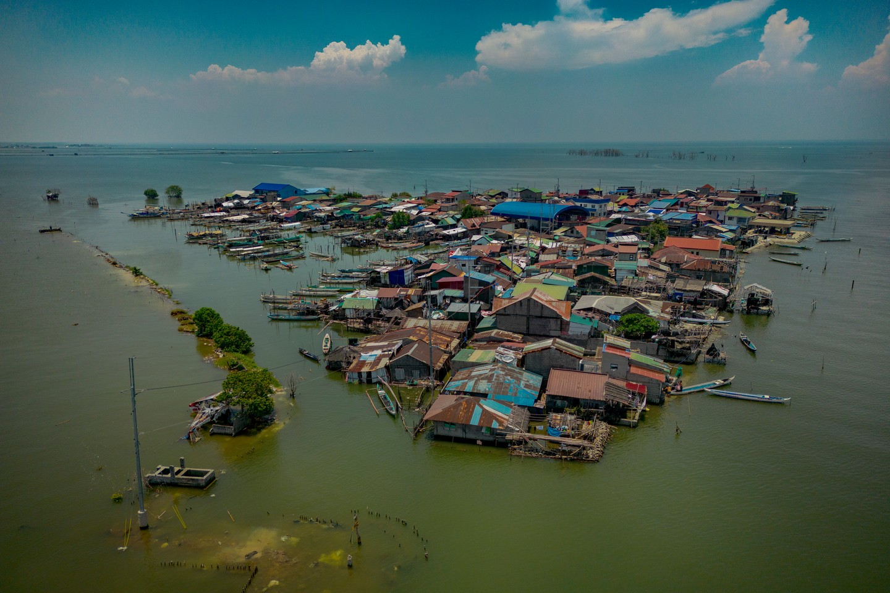

Climate
When the Seasons Can No Longer Be Trusted
Climate change is one of the most pressing environmental issues facing the Philippines today. Because the country is made up of more than 7,600 islands, it is highly vulnerable to natural hazards such as typhoons, floods, storm surges, droughts, and rising sea levels. These environmental changes affect not only forests, rivers, and oceans but also the people whose livelihoods depend on agriculture and fishing. Every year, thousands of Filipino families experience the effects of climate-related disasters, making climate action more important than ever.
One of the clearest signs of climate change is the changing pattern of the rainy and dry seasons. In the past, farmers relied on the Habagat (southwest monsoon) and Amihan (northeast monsoon) to determine when to prepare their land, plant crops, and harvest their produce. Today, these seasonal patterns are becoming increasingly unpredictable. Some provinces experience long periods without rain, causing crops to dry up and reducing water available for irrigation. In contrast, other areas receive intense rainfall over a short period, resulting in flash floods that wash away newly planted crops and damage agricultural land. These changes make farming more difficult and increase the risk of food shortages and financial losses for farming communities.

Climate change also contributes to rising sea levels, creating serious challenges for people living along the country's coastlines. Scientific studies have shown that sea levels around the Philippines are increasing faster than the global average. As seawater gradually moves inland, coastal flooding becomes more frequent, especially during high tides and storms. Shoreline erosion slowly reduces the amount of land available for homes and agriculture, while saltwater intrusion contaminates freshwater sources and fertile farmland. As a result, many coastal residents struggle to maintain their livelihoods, and some families are forced to relocate to safer areas because their communities are becoming increasingly vulnerable.
The impact of climate change is also becoming more evident through the increasing intensity of tropical cyclones. Although the Philippines experiences an average of twenty tropical cyclones each year, recent studies suggest that warmer ocean temperatures allow storms to become stronger in a shorter period. These stronger typhoons produce heavier rainfall, stronger winds, and more destructive storm surges. Entire communities may experience severe flooding, damaged infrastructure, loss of electricity, and destruction of homes, schools, farms, and fishing equipment. For many families, recovering from thes e disasters requires months or even years, making it difficult to return to normal daily life. Coastal and farming communities are among those most affected because their livelihoods depend directly on natural resources. Fisherfolk often lose their boats and fishing gear after powerful storms, while farmers experience poor harvests because of drought, flooding, or changing rainfall patterns. These challenges not only reduce household income but also affect local food production and increase the prices of agricultural products. Without proper adaptation strategies, many communities will continue to face greater environmental and economic risks in the future.
Despite these challenges, climate action can help reduce the impacts of climate change. Protecting forests and mangrove ecosystems, reducing greenhouse gas emissions, promoting sustainable farming and fishing practices, conserving water resources, and strengthening disaster preparedness programs are important ways to build resilient communities. Government agencies, schools, private organizations, and individual citizens all have a role to play in protecting the environment. Small actions such as reducing waste, planting trees, Climate change is no longer a problem that will only affect future generations\ it is already happening today. The experiences of many Filipino communities show that environmental protection and climate action are necessary to safeguard lives, livelihoods, and natural resources. By working together and making responsible decisions, society can reduce climate risks and help ensure a safer and more sustainable future for everyone.